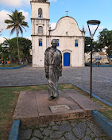
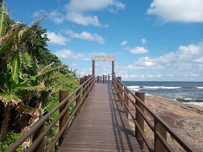

HISTORIA
A origem de Itanhaém está cercada de controvérsias históricas, embora oficialmente seja considerada a data de 22 de abril de 1532 como de sua fundação, associada à figura de Martim Afonso de Souza.
Uma segunda vertente atribui ao castelhano João Rodrigues e ao português Antônio Soares, que chegaram à região por volta de 1549, a responsabilidade pela fundação da cidade.
É irrefutável, porém, o envolvimento de Martim Afonso no processo de sua formação histórica. Coube-lhe a escolha do local onde se estabeleceria a povoação e a capela em louvor à Imaculada Conceição, área anteriormente povoada por colonos e índios pertencentes à tribo Itanhaém.

DICAS TURISTICAS
Visite a Igreja Matriz de Sant'Anna (de 1564) e o Museu Conceição de Itanhaém (na antiga Casa de Câmara e Cadeia), além das lojinhas e casinhas coloridas ao redor da praça.

O ponto turístico mais famoso da cidade. Trata-se de uma formação rochosa natural onde, reza a lenda, o Padre José de Anchieta descansava e buscava inspiração para seus poemas. O acesso é feito por uma belíssima passarela de madeira suspensa que contorna os costões e o mar.
